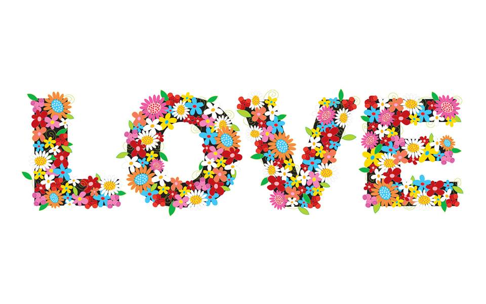
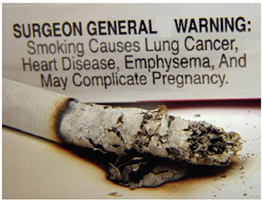

HEALTH TIPS for YOU
NYSC cares about your HEALTH and so we want you stay healty always.
A HEALTHY corps member is a PRODUCTIVE corps member.
A HEALTHY corps member is a PRODUCTIVE corps member.
Dating / Relationship Tips
These are useful tips for new friends in a lovely relationship. Just a tip can save your relationship an extra mile away from break-up;For Guys >>>
Questions You Must Never Ask Your GirlAre you wearing that?
Whenever you’re going out with your girl she puts her best into her appearance to look good for you. She’ll take this question to mean that you think she looks terrible and you’d rather not be seen with her with the way she’s dressed.-
Don’t you think you should lose weight?
Most girls, whether skinny or fat, are somewhat self conscious about their bodies. That’s why this question is a bombshell. Your girl will assume that you’re calling her fat and she will take out all her frustration about her imperfections on you. -
Do you want me to show you how my Ex used to do it?
Never, ever, compare your girlfriend with your ex. Don’t tell her how your ex used to dress or cook or how she was in bed. Never offer to teach her something that your ex used to do. -
Do you mind if I add my Ex on Facebook?
This is a horrible question to ask your girlfriend. This is one of those times when you’ll get an answer like “Go ahead” or “Do what you want”. For your own sake, don’t go ahead and don’t do what you want. Remember guys, the most innocent and sincere question can be analyzed and twisted in your girlfriend’s mind till it becomes horrible so watch out!

For Ladies >>>
Questions You Must Never Ask Your Guy-
“Your friend is so handsome"
Never tell your guy that a friend of his you recently met is handsome or hot or charming; most especially, when you’ve never complimented your guy on such. That will just be looking for trouble. A guy would find it complimenting if you tell him he has really good friends. But if you compliment his friend with any traits that your own man lacks in, he’d feel more insecure and even get angry with you and his friend. -
“Can’t you do it like my ex?”
Never say the word ‘ex’ and ‘you’ in the same sentence unless you’re complimenting your guy. Guys hate being compared, especially with your exes. -
“Why are you so stupid?”
Never ever disrespect your man. Don’t insult him or put him down in front of his friends and family. Settle whatever issues you have with him like an adult. Never resort to name calling. -
“I’ve dated better guys”
This is one of the worst things you can say to a guy. It’s most likely to end the relationship forever. If you say this to a guy, you’ll make him insecure and every time you’re together, he’ll be wondering if you’re thinking about those “better guys” and how to replace him. He’ll never feel safe with you again. “We need to talk”
A lot of guys agree that this is one of the scariest things a girl can say to them. The fact that you want to talk about something serious with your guy is a good sign for the relationship. But when you walk up to him and say “we need to talk,” it makes him become defensive and start wondering what he did wrong and whether he needs to start thinking of a lie to tell you.
Marriage Tips
Before Marriage
Here are some topics to discuss with your spouse-to-be before the big day of your wedding:Seven Conversations You Must Have Before Marriage
- Will you have kids and, if so, how will you raise them?
Assuming that you both want to be parents someday, how many do you want to have and how will you raise them as co-parents? Will they be raised under one religion? How do you expect to discipline them? What are your expectations about taking them on vacations? What are the expectations about who will be the primary caretaker? If one of you goes on parental leave, will that person be expected to eventually go back to work? - How will you manage your finances?
What individual assets and debts will you bring to the marriage? Who will pay the bills? What will be considered a “big ticket” item and how much money can spend on a purchase before you should consult your spouse? How will you save? What are your financial goals and how will you reach them together? Will there be joint bank account or separate bank accounts? Will you each have an allowance of spending money and how much? - How will you spend free time?
How do you expect to spend it — together or individually? Will you still have time with friends that doesn’t include each other? How often would you like to vacation and what kind of destinations would you like to visit? How will you let each other know if you feel like you need space? - Do you have expectations about s*x?
How often will you have s*x? When is a good time? How will you keep your s*x life from getting boring? How will you share s*xual fantasies and desires? Do you have any boundaries when it comes to intimacy? - How will you divvy up chores?
Who will do what in the home? If your spouse cooks dinner, are you expected to clean the dishes, pots and pans? Who will keep up with the maintenance around the house? Who will mow the lawn or take out the trash? Will the children lend a hand in the chores and will they be given an allowance? How will you divvy up the everyday load? - What can you do to openly communicate?
How can you make sure that you keep your communication as good as it is now? How will you make sure to handle your conflicts appropriately? Will you check in with each other at the end of the day or once a week? What can you do as an individual to make sure that you keep the health of your marriage a priority? - Do you have any annoyances?
What annoys you? What annoys your spouse-to-be? How will you let each other know when certain habits or behaviors bother you? How is it best to tell the other person about things regarding family that are upsetting?
The more informed you are about your relationship, the better off you will be. So, have yourselves an intelligent and informative conversation so that when the big day arrives, you’ll have a ball!
Diet Tips
Have you ever been asked, “Are you a healthy eater?” What does that even mean? Healthy eating means getting the right amount of calories, vitamins, and nutrients your body needs to be its best.How to be a healthy eater
- Learn how to read food labels. If you know what’s in your food and how much, you can limit those nutrients that you want to cut back on and up the ones you want to eat more of. For example, you may want to eat less saturated fat, but more calcium.
- Be sure to check serving size. One cup of breakfast cereal or one slice of bread is a serving. A serving of meat, chicken, or fish is about the size of a deck of cards.
- Get regular exercise. adults need about 60 minutes every day.
- Unless your doctor gives you the okay, do not diet to lose weight. Instead, change your habits to focus on healthy foods and exercise.
- Don’t skip meals. Breakfast is especially important!
- Don’t deprive yourself of foods you love.
- Avoid “emotional eating”—eating because you are bored, stressed, or feeling blue. Try writing in a journal, talking to someone you trust, working out, or volunteering in your community of service.
- Don’t forget to enjoy food and mealtimes with friends, fellow corps members and family!
Exercise Tips
You may know corps members who complain about exercise—“It’s boring,” “It’s too hard,” or “It takes too much time.” Sure, keeping fit can chal¬lenge your mind and body. Just keep in mind that exercise is key to good health.Exercise can:
- help you keep a healthy weight
- help prevent serious illness, like heart disease, certain cancers, type 2 diabetes, and osteoporosis
- boost your energy level and mood
- help you to feel good about yourself
Keys to keeping active
- Just starting out? Begin with small goals you can reach. Over time, reach for higher goals. If you want to run, start by switching between running and walking.
- Find the right activity for you. Ask yourself: Will I enjoy it? Is it safe? Do I have time to do it? Do some of my friends want to try it with me? Stick with the things that you like, that you have time for, and that you can do safely.
- Protect yourself as needed by wearing a helmet, mouth guard, special eyewear or wrist, knee and elbow pads. Make sure your shoes are sturdy and fit well. Ask a coach to help you pick out the proper footwear.
- Do not exercise outdoors if it is really hot and humid. Also, avoid outdoor exercise if air pollution levels are high.
- Don’t overdo it! Exercise is important, but too much exercise can be very bad for you.
Skin Care Tips
Try these time-tested beauty basics, which will keep you looking naturally beautiful! Don’t compare yourself to models. They have a team of stylists as well as camera tricks to make them look so perfect.- Wash your face regularly using a mild cleanser and warm water. Be gentle—don’t scrub hard! Avoid astringents, which can dry out and irritate skin.
- Use only light, water-based moisturizers. Look for one that has SPF 15 or a higher number sunscreen.
- For sensitive skin, try products that say “fragrance-free” or “without perfume.”
- If you’re allowed to wear makeup, use only water-based products that say “non-comedogenic” or “non-acnegenic” on the label. Make sure to take off your makeup before going to bed.
- To control acne, try over-the-counter products that you can buy without a doctor’s order. These products come as gels, lotions, creams, and soaps. Your doctor can treat more serious acne problems.
- Drink plenty of water.
- Always wear “broad-spectrum” sunscreen, which protects against UVA and UVB rays. Wear sunscreen even on cloudy days. SPF alone does not protect against these two types of harm¬ful rays. Follow the directions on the bottle to put more on after a while. Wear lipscreen with at least SPF 15. And, your skin needs more than just sunscreen.
- Stay out of the sun in the middle of the day, when rays are strongest.
- No way —and neither do dirt, fried foods, or sexual activity. Changes in your skin during puberty trigger acne. Stress, your period, picking at or popping your pimples, scrubbing your skin too hard, getting too much sun and using oil-based lotions, makeup, or hair gels can cause breakouts to get worse.
Hair Care Tips
- Wash your hair regularly, but only as often as you need to. Washing too often can strip away the natural oils that give hair shine and body.
- If you see white flakes in your hair or on your shoulders, try a shampoo that treats dandruff. These shampoos are sold near other hair-care products.
- Use shampoo, conditioners, and styling products that are right for your hair type.
- Try different styles and looks. But beware of products that perm, relax, or color hair at home. They have chemicals that can damage your hair. Also, over styling with hairdryers or curling and flattening irons can cause your hair to dry out or break.
- Protect your hair and face from sun damage by wearing a hat or scarf that covers the back of your neck and face.
- Protect your hair from chlorine (found in pool water) by wear¬ing a swim cap or rinsing out your hair right after swimming. Soaking your hair with regular water before you put on your swim cap can also help.
Tips on Smoking
Did you know that most adult smokers began smoking as teens? Maybe they thought smoking would make them look cool, help them gain friends, or help them deal with problems. Maybe they thought they would try it only once, or that they could quit at any time. You’re smart—do these sound like good reasons to you?Before you light up, consider that ....
- Most Corps members don’t smoke. And most corps members think using tobacco is gross and a turn-off. After all, smoking makes your clothes and hair stink, stains your teeth, and causes bad breath—yuck! It also causes emphysema, different types of cancers, and wrinkles.
- The damage begins with the first puff—and gets worse as you keep smoking. That means if you play sports, are a dancer, or sing or play an instrument, you will not be able to do any of these things very well.
- Social smoking is bad for you, too. Smoking only at parties is still dangerous. People who only light up sometimes may be less likely to ever try to quit!
- It’s easier to never light up than it is to quit. Most long-term smokers started in their teens. But there is still hope, you can overcome it!
- Smoking costs big bucks! It will cost you about $1,000 a year if you smoke a pack of cigarettes each day. It will only continue to get even more costly. Think how many CDs or clothes you could buy for this money!
- Tobacco companies do not care about you! Their goal is to make their customers addicts so that they can stay in business. Don’t get caught in their trap.

P.S.: If you are a smoker, you can make quitting tobacco easier by talking with your doctor, getting help from the elderly and hanging out with friends who don’t smoke or who have quit.Tips on Alcohol and other Drugs
Want to know the real truth aboutDRUGS and ALCOHOL ?
- Drugs and alcohol change the way your brain and body work.
- Drugs and alcohol can cause life-long damage to your body.
- Alcohol and many drugs are addictive, which means it can be super hard to quit.
- Drugs and alcohol make it harder to make safe choices and protect yourself.
- Your body can have a bad reaction to alcohol and drugs—you can become really sick or even die. This happens to teens every day.
- It’s also against the law to have certain drugs, no matter what your age. If you are at a party with alcohol or illegal drugs—even if you are not using them—you could be arrested.
- Don’t allow anyone to give you drugs without you knowing it.
- Don’t accept drinks from people you do not know or just met.
- If possible, get drinks that are unopened and open them for yourself.
- Watch your drink and keep it with you at all times, even when you go to the bathroom. If you didn’t watch it the whole time, get rid of it!
Sleep Tips
- Wake up at the same time each morning and go to bed at the same time each night.
- Relax before bedtime. A bath, a book or a little TV can mellow you out. But, don’t watch TV in bed.
- Try a small snack with milk to bring on the sleep. Pigging out before bed can make it harder to doze off.
- Make sure your room is dark, quiet, cool, and comfortable.
- Don’t drink beverages with caf¬feine (like colas, coffee, and tea) from afternoon until bedtime.
- Do homework and study earlier in the evening. A good night’s sleep is the best way to get ready for an important test or quiz.
Fighting Germs Tips
It doesn’t sound nice, but there are germs everywhere. These germs are so small that they can hurt your body without you even knowing. Germs can cause infec¬tions such as a cold or the flu. They also can cause infections that can put your life in danger, such as HIV, the virus that causes AIDS.You can fight germs by....
- Washing your hands often: after using the bathroom, after blow¬ing your nose or coughing, after touching animals, after garden¬ing, before and after spending time with someone who is sick, and before and after handling food.
- Waiting until you are married to have sex. If you are sexually active, you can get a sexually transmitted disease or STD. When used right and all the time, condoms can help pro¬tect you from getting some STDs. Condoms do not protect against all STDs 100 percent of the time.
- Not sharing needles used for drugs, tattoos, or pierced ears. Sharing dirty needles (you can’t tell it is dirty by looking) can give you HIV or hepatitis, which can put your life in danger.
- Learning proper food handling and storage
CONTACT US
NYSC Directorate Headquarters
Plot 416, Tigris Crescent
Off Aguiyi Ironsi Street, Maitama.
PMB 138, Garki ,Abuja.
SMS Message
09-2912257
info@nysc.gov.ng
NYSC Directorate Headquarters
Plot 416, Tigris Crescent
Off Aguiyi Ironsi Street, Maitama.
PMB 138, Garki ,Abuja.
SMS Message
09-2912257
info@nysc.gov.ng